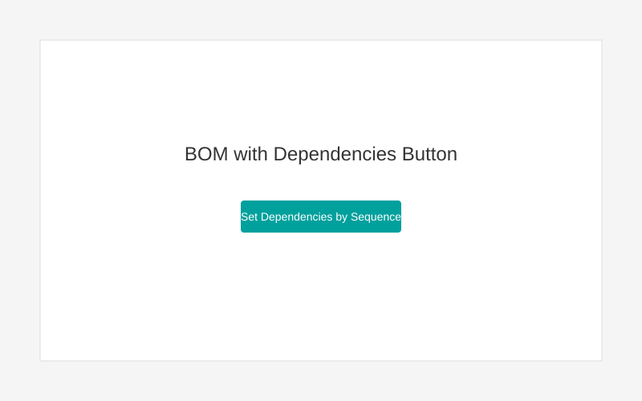
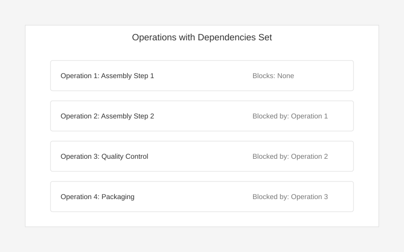

This module enhances the manufacturing process in Odoo by allowing automatic configuration of operation dependencies based on their sequence in bills of materials (BOMs).

The "Set Dependencies by Sequence" button appears when operation dependencies are allowed

Dependencies are automatically set based on operation sequence
Contact Econovo at info@econovo.es